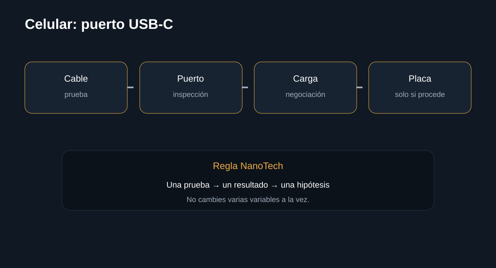

Introducción

Comprueba cable, adaptador, suciedad, contacto y comportamiento antes de pensar en reparación de placa. La guía busca que puedas separar causas antes de sustituir componentes.
Antes de empezar: seguridad
Desconecta el equipo cuando corresponda y no realices mediciones peligrosas sin formación e instrumental. En baterías, fuentes y placas, detén el procedimiento si detectas daño físico, líquido, olor extraño o calor anormal.
- Documenta el estado inicial.
- Haz una sola modificación cada vez.
- Conserva tornillos, cables y configuración original.
Herramientas
1. Probar cargador y cable
El accesorio es la primera variable que debe eliminarse.
Qué hacer
- Prueba un conjunto compatible conocido.
- Comprueba que el conector entre completamente.
- No fuerces el puerto.
Registra el resultado antes de continuar.
InterpretaciónEl accesorio es la primera variable que debe eliminarse.
2. Inspección visual
Polvo y pelusa pueden impedir contacto.
Qué hacer
- Apaga el teléfono.
- Ilumina el puerto.
- Retira suciedad superficial sin introducir objetos metálicos.
Registra el resultado antes de continuar.
InterpretaciónPolvo y pelusa pueden impedir contacto.
3. Observar comportamiento
La forma en que falla aporta información.
Qué hacer
- Comprueba si carga en distintas posiciones sin forzar.
- Si solo carga al mover el cable, sospecha contacto/puerto.
- No sigas usando un puerto físicamente dañado.
Registra el resultado antes de continuar.
InterpretaciónLa forma en que falla aporta información.
4. Derivar a reparación
Si accesorios y limpieza no solucionan el problema, puede existir daño en puerto o circuito de carga.
Qué hacer
- Haz copia de seguridad.
- No desmontes un teléfono sellado sin herramientas.
- Deriva a reparación cuando requiera microsoldadura.
Registra el resultado antes de continuar.
InterpretaciónSi accesorios y limpieza no solucionan el problema, puede existir daño en puerto o circuito de carga.
Diagnóstico final
Fuentes y notas
La documentación oficial de Android recomienda comprobar cargador, cable y presencia de polvo o pelusa en el puerto antes de avanzar a pasos más complejos.